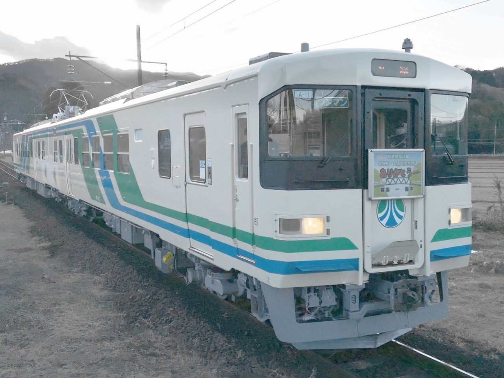
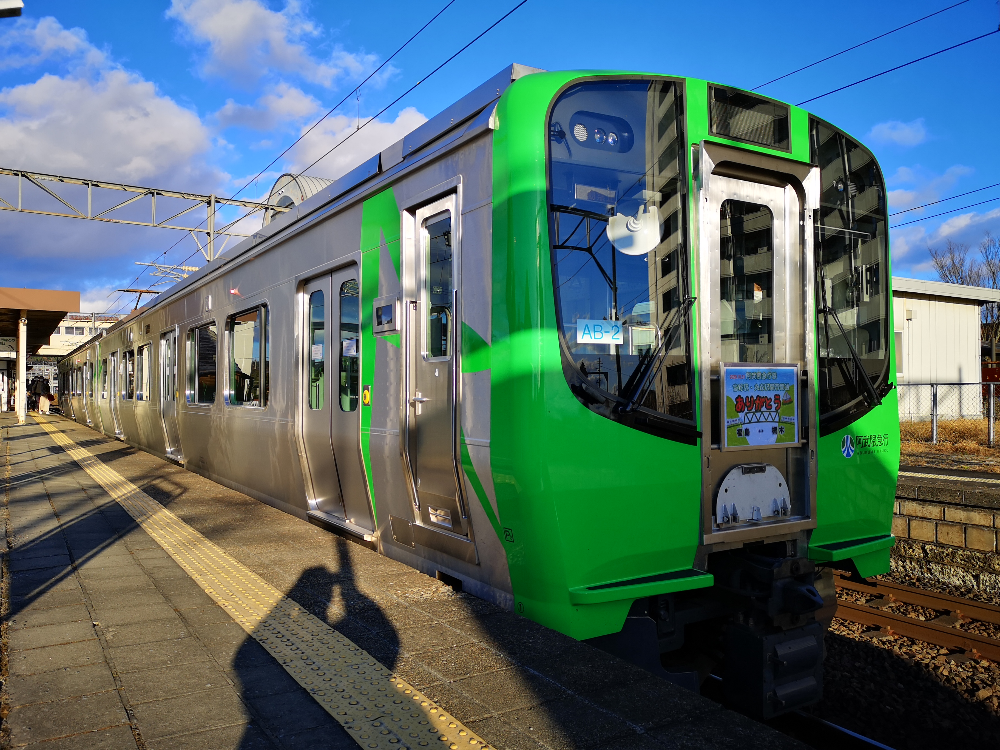

阿武隈急行（2025.11.06）
| 【８１００系 一般形交流電車】（1988年7月～） | ||||
|
 |
2020.11 阿武隈急行線梁川駅 AT8112 普通 |
1988年の全線開通と同時に交流電化されたことにあわせ登場。 2両編成で、車体は国鉄713系電車を基本とする片側2扉構造であるが、ワンマン運転を考慮し、前位側の客用扉を運転台直後へ寄せて片開きとしているのが特徴。 寒冷地を走行するため耐寒仕様であるが、走行区間の降雪量が少ないことから耐雪構造は採用されていない。 運転台機器の配置はJR東日本の近郊・急行形電車のそれと統一感を持たせて配置、車両の整備はジェイアール東日本テクノロジーに委託している。 2025年3月で定期運転を離脱したが、AB900系の代走や団体専用の臨時列車として健在。 | ||
| 【ＡＢ９００系 一般形交流電車】（2019年7月～） | ||||
|
 |
2020.11 阿武隈急行線槻木駅 AB900-2 普通 |
開業以来使用してきた8100系の置換えを目的に、JR東日本のE721系をベースとして製造された車両。 2両編成で、槻木方が制御電動車のAB901形、福島方が制御付随車のAB900形。形式は阿武隈急行の通称「あぶ急」に由来して付けられた。 車体のアクセントカラーは沿線自治体の自然や花をテーマに5種類設定される予定で、 第1編成は薄藍色、第2編成は緑となっている。（10編成製造予定） | ||